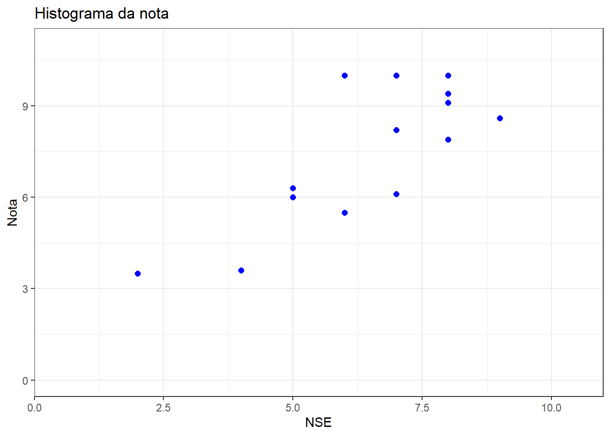

Existe uma ciência por trás sobre por que, quando e como fazer gráficos.
Os gráficos permitem caracterizar, descrever e relacionar as variáveis. Está entre as técnicas mais poderosas de exploração dos dados, pois sintetiza as informações.
Bons gráficos: apresenta muita informação de forma concisa e coerente.
Gráficos ruins: distorcem informações, dificultam e enviesam a interpretação.
Para representar graficamente as variáveis, seguimos também as regras de classificações.
Variáveis categóricas ou qualitativas
Tabela de frequência
Barras
Pizza
Variáveis métricas discretas
Tabela de frequência
Barras
Variáveis métricas contínuas
Tabela de frequência de agrupamentos (faixas)
Histograma
Densidade
Boxplot
Vejamos agora como representar nossas variáveis com o pacote GGplot.
Antes, porém, vamos carregar nossos dados fictícios para representar graficamente.
# 0. Packages and Setup ----# install.packages("pacman")library(pacman)
Warning: package 'pacman' was built under R version 4.3.1
aluno sexo raca raca2 altura nse escola nota faltas
1 1 F Branca Branca Baixo 7 A 8.2 2
2 2 F Branca Branca Médio 8 A 9.4 1
3 3 F Parda Não branca Alto 6 A 5.5 4
4 4 M Parda Não branca Médio 7 A 6.1 5
5 5 M Preta Não branca Médio 8 A 7.9 3
6 6 M Branca Branca Médio 9 A 8.6 1
7 7 F Amarela Branca Baixo 8 A 9.1 0
8 8 F Parda Não branca Médio 5 A 6.0 3
9 9 M Amarela Branca Médio 7 B 10.0 0
10 10 M Parda Não branca Alto 4 B 3.6 8
11 11 F Preta Não branca Baixo 7 B 10.0 0
12 12 M Preta Não branca Médio 5 B 6.3 3
13 13 F Branca Branca Médio 6 B 10.0 0
14 14 M Branca Branca Alto 8 B 10.0 2
15 15 F Parda Não branca Alto 2 B 3.5 9
GGplot: A Grammar of Graphics
GGplot é a gramática dos gráficos no R.
As funções para criação de gráfico seguem um padrão estrutural lógico que é organizado por camadas.
Na primeira camada, definimos nossos dados e as variáveis.
ggplot( data = … , aes( x = … , y … ) )
Como vamos iniciar com apenas uma variável, inserimos apenas o input do x.
ggplot( data = mydata , aes( x = sexo ) )
Na segunda camada (adicionada com + ao final), definimos o tipo do gráfico.
ggplot( data = … , aes( x = … , y … ) )+
geom_bar( … )
ggplot( data = mydata , aes( x = sexo ) )+geom_bar()
Nas demais camadas, podemos definir opções para os eixos e muito mais
ggplot( data = … , aes( x = … , y … ) )+
geom_bar( … )+
scale_y_continuous( … )+
scale_x_discrete( … )
ggplot( data = mydata , aes( x = sexo ) )+geom_bar(fill="steelblue")+scale_y_continuous(limits=c(0,10))+scale_x_discrete()+labs(title ="Frequência absoluta por sexo",y="Frequência absoluta",x="")+theme_bw()
Podemos complexificar nosso gráfico inserindo outras variáveis. Por exemplo, vamos colorir as barras de acordo com a raça.
ggplot(data = mydata, aes(x = sexo, fill = raca))+geom_bar()
Alternativamente, podemos separar as barras coloridas especificando a posição delas no argumento onde definimos as barras.
g1 +labs(title ="Frequência absoluta por sexo",y="Frequência absoluta",x="",fill="Raça")+theme_bw()
A mesma lógica seguimos para outros tipos de gráficos. Vejamos as opções para as variáveis métricas.
Como vimos, as variáveis métricas discretas são representadas com barras, como as categóricas.
ggplot( data = mydata , aes( x = faltas ) )+geom_bar(fill="steelblue")+scale_y_continuous(limits=c(0,5))+scale_x_continuous(limits=c(0,10),breaks=seq(0,10,2))+labs(title ="Frequência de faltas",y="Frequência absoluta",x="")+theme_bw()
As variáveis métricas contínuas, por outro lado, são representadas por histogramas, densidades ou boxplots.
ggplot( data = mydata , aes( x = nota ) )+geom_histogram(col="blue")+scale_y_continuous(limits =c(0,5),expand =c(0,0))+scale_x_continuous(limits =c(0,11),expand =c(0,0))+labs(title ="Histograma da nota",y="Frequência absoluta",x="Nota")+theme_bw()
`stat_bin()` using `bins = 30`. Pick better value with `binwidth`.
Min. 1st Qu. Median Mean 3rd Qu. Max.
-2.523 3.605 4.955 4.951 6.281 12.520
Podemos, ainda, representar duas variáveis métricas juntas com um gráfico de dispersão.
ggplot( data = mydata , aes( x = nse, y = nota) )+geom_point(col="blue",size=2)+scale_y_continuous(limits =c(0,11))+scale_x_continuous(limits =c(0,11),expand =c(0,0))+labs(title ="Histograma da nota",y="Nota",x="NSE")+theme_bw()

Podemos ainda salvar nosso gráfico em um objeto e acrescentar uma linha de tendência.
g2 <-ggplot( data = mydata , aes( x = nse, y = nota) )+geom_point(col="blue")+scale_y_continuous(limits =c(0,11))+scale_x_continuous(limits =c(0,11),expand =c(0,0))+labs(title ="Histograma da nota",y="Nota",x="NSE")+theme_bw()g2 +geom_smooth(method ="lm") # Linear Model
`geom_smooth()` using formula = 'y ~ x'
Há muitas opções no GGplot. Mas também há outros pacotes adicionais. O plotly, por exemplo, produz gráficos interativos.